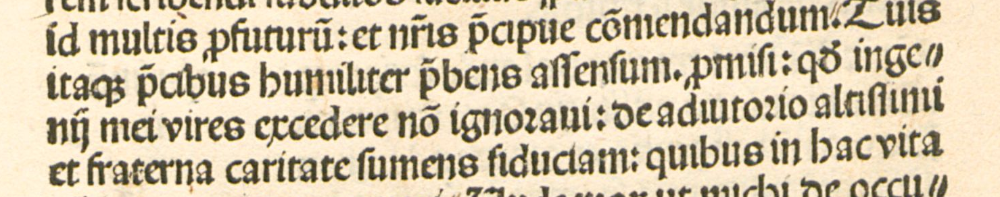
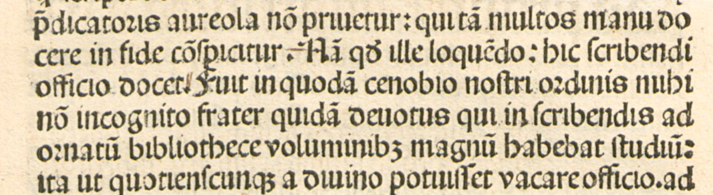
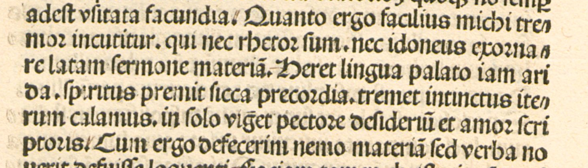
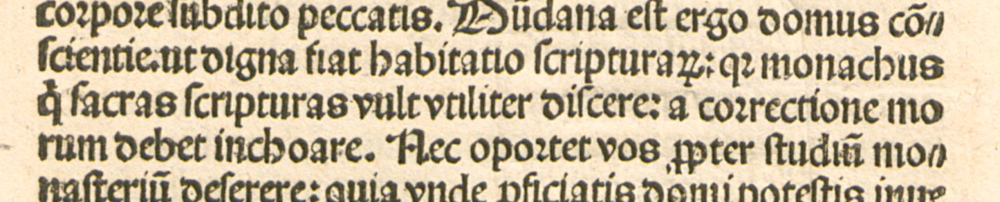
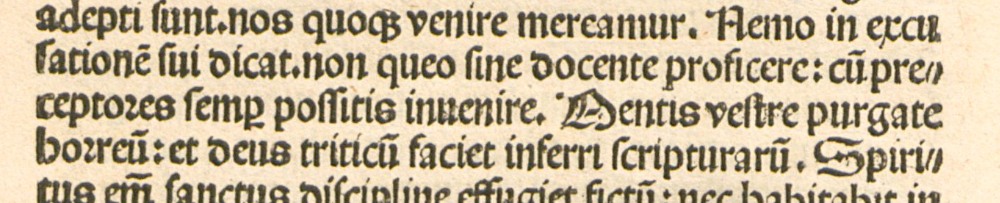
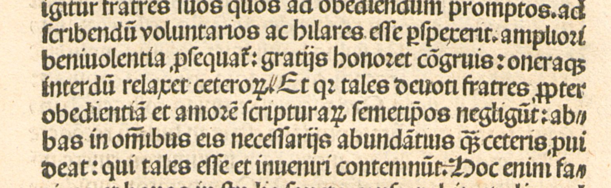

AI triage of two translations of the same printed witness. Priorities describe potential effects on meaning. Explicit AI scan assessments are included where available; documented human review remains pending.
This pilot compares archival English from each opening title through the final ownership note. Model headers and later digitization metadata are outside scope; page and segment labels are ignored by token alignment. Sixteen selected cases receive provisional semantic triage; three equivalent-wording controls are retained. This is not an exhaustive philological review. The comparison is retained as the frozen pre-correction snapshot; local correction resolutions are shown separately.
The full token comparison produced 1728 lexical differences. These are search aids, not confirmed errors. Queue JSON · Complete lexical inventory
The earlier text negates exceeding his abilities; T4B affirms it.
Earlier English
I promised what I knew did not exceed the powers of my talent
Frozen source, lines 13–13 · Published reader (passage) Present in frozen reading view data/translation_disagreements/prdl-24362_de-laude-scriptorum-manualium/snapshots/before-corrections/works/prdl-24362_de-laude-scriptorum-manualium/english.md
Trithemius 4B English
I promised what I knew did exceed the powers of my talent
Frozen source, lines 45–45 · Published reader (work) Present in frozen reading view data/translation_disagreements/prdl-24362_de-laude-scriptorum-manualium/snapshots/before-corrections/works-t4b/prdl-24362_de-laude-scriptorum-manualium/english.md
Why it matters: This reverses the claim about the author's ability and his reliance on divine help.
Initial OCR assessment: The earlier OCR preserves excedere nō ignoraui; the T4B OCR also retains a negative form before ignozaui. The negation belongs to knowing/being unaware, which tentatively supports the T4B sense.
Initial proposed reading: T4B English. The later AI scan assessment supports the local correction above; human review remains pending.
Original review task: Check the printed negation and verb, then adjudicate the full sentence; do not transfer the negation onto excedere.
Inspect Latin evidence and source locations
Earlier Latin OCR
nr̄is p̄cipue cōmendandum Tuis
itaqꝫ p̄cibus humiliter p̄bens assensum. ꝓmisi: qđ inge¬
nij mei vires excedere nō ignoraui: de adiutorio altissimi
et fraterna caritate sumens fiduciam: quibus in hac vita
cōtime cupimus armari Unde mox ut michi de occu¬
pacōnibus meis paululū licuit respirare mentē fidei: ma
num apposui carthis: et hūc quē cernis modicū
pfturũ: et nris pcpue comendandum. Tuis
itaq; pabus humiliter pbcns affenfum. pmif: qõ inge-
nij mei vires excedere no ignozauĩ: de aduortio aliafimũ
et fraterna caritate fumene fiduciam: quibus in hac vita
cõtinuæ cupimus armari. Unde mox ut michi de occu-
pacionibus meis paululũ licuit refpirare. mente fidei: ma
num apofui carthie: et hũc quẽ cernis modicũ
OCR segment and page labels are archival locators. Image mapping is established only in the explicit AI scan assessment where provided. Institutional source record.
AI scan assessment — 2r (0005)

promisi: quod ingenii mei vires excedere non ignoravi
The printed non qualifies ignoravi: I was not unaware that it exceeded my powers. The earlier English moves that negation onto exceeded.
Interpretive transcription with expanded abbreviations; brackets mark uncertain letter readings. Codex AI visual assessment; no human review documented. Image: Bayerische Staatsbibliothek, Public Domain Mark 1.0. Full institutional image.
AI triage · Awaiting human review · Local correction recorded
The earlier text claims personal familiarity; T4B says the name was unknown and changes me to us.
Earlier English
There was in a certain monastery of our order, not unknown to me, a certain devout brother
Frozen source, lines 93–93 · Published reader (passage) Present in frozen reading view data/translation_disagreements/prdl-24362_de-laude-scriptorum-manualium/snapshots/before-corrections/works/prdl-24362_de-laude-scriptorum-manualium/english.md
Trithemius 4B English
There was in a certain monastery of our order, unknown to us by name, a devout brother
Frozen source, lines 199–199 · Published reader (work) Present in frozen reading view data/translation_disagreements/prdl-24362_de-laude-scriptorum-manualium/snapshots/before-corrections/works-t4b/prdl-24362_de-laude-scriptorum-manualium/english.md
Why it matters: This changes the author's relationship to the anecdote and its asserted evidential basis.
Initial OCR assessment: Both OCRs preserve a negated incognito, with a damaged preceding pronoun. The addition by name is not apparent in these excerpts. The earlier sense is provisionally better supported.
Initial proposed reading: earlier English. The later AI scan assessment supports the local correction above; human review remains pending.
Original review task: Inspect the pronoun and the antecedent of incognito in the scan before resolving both polarity and attribution.
Inspect Latin evidence and source locations
Earlier Latin OCR
cōspicitur. Nā qđ ille loquēdo: hic scribendi
officio docet! Fuit in quodā cenobio nostri ordinis nuhi
nō incognito frater quidā deuotos qui in scribendis ad
ornatū bibliothece voluminib magnū habebat studiū:
ita ut quotienscun a diuino potuisset vacare officio. ad
secreta celle se conferens. huic sacrato labori inisteret.
Unde et multa sanctoꝝ opuscula.
coſpicatur. Hâ qò ille loquedo: hic scribendi
officio docet. Fuit in quodâ cenobio nostri ordinis nubi
no incognito frater quidâ deuotus qui in scribendis ad
ornatù bibliothecæ voluminib3 magnù habebat studiù:
ta ut quotienfuzq a diuino potuiffet vacare officio, ad
secretâ celle fe conferens. huic sacrato labori infifteret.
Unde et multa sanctoù opuscula.
OCR segment and page labels are archival locators. Image mapping is established only in the explicit AI scan assessment where provided. Institutional source record.
AI scan assessment — 9v (0020)

Fuit in quodam cenobio nostri ordinis mihi non incognito frater quidam devotus
The scan clearly has mihi non incognito. There is no by name; the adjective attaches to the monastery.
Interpretive transcription with expanded abbreviations; brackets mark uncertain letter readings. Codex AI visual assessment; no human review documented. Image: Bayerische Staatsbibliothek, Public Domain Mark 1.0. Full institutional image.
AI triage · Awaiting human review · Local correction recorded
T4B introduces Jesus as an object of looking; the earlier text describes the author's sight and pen trembling.
Earlier English
my sight trembles; likewise my pen
Frozen source, lines 43–43 · Published reader (passage) Present in frozen reading view data/translation_disagreements/prdl-24362_de-laude-scriptorum-manualium/snapshots/before-corrections/works/prdl-24362_de-laude-scriptorum-manualium/english.md
Trithemius 4B English
my pen trembles, looking again to Jesus
Frozen source, lines 93–93 · Published reader (work) Present in frozen reading view data/translation_disagreements/prdl-24362_de-laude-scriptorum-manualium/snapshots/before-corrections/works-t4b/prdl-24362_de-laude-scriptorum-manualium/english.md
Why it matters: The devotional referent and the action are materially different.
Initial OCR assessment: The OCR witnesses have damaged readings around intuitus and the following word. Neither excerpt plainly spells a reference to Jesus. This is a source-reading problem as well as a translation disagreement.
Initial proposed reading: undecided. The later AI scan assessment supports the local correction above; human review remains pending.
Original review task: Inspect the printed line at high resolution, transcribe the disputed words, and only then decide whether the added referent is supported.
Inspect Latin evidence and source locations
Earlier Latin OCR
idoneus exorna-
re latam sermone materiã. Heret lingua palato iam ari
da. spiritus premit sicca precordia. tremet intuitus ihe-
rum calamus. in solo vigẽt pectore desideriũ et amor scri
ptoris: Cum ergo defecerim nemo materiã sed verba no
uerit defuisse loquenti. Faciam tamen christo iuuāte qđ
potero. cũ sola charitas nr̃i sit causa laboris. que omnia
posse
idoneus exorna
re latam sermonem materiã. Veret lingua palato iam ari
da. spiritus premiũ ficca precordia. tremet intunctus iten
rum calamuis. in folo viger pectore defiderii et amoris scri
ptoris. Cum ergo defecerim nemo materiã sed verba no
uerit defuisse loquendi. faciam tamen christo iuuare qò
potero. cù sola charitas nri fit caufa laboris. que omnia
posse
OCR segment and page labels are archival locators. Image mapping is established only in the explicit AI scan assessment where provided. Institutional source record.
AI scan assessment — 3v (0008)

tremet [intuitus] iterum calamus
The printed line describes trembling and calamus. The word spanning the line break is iterum, not a reference to Jesus. The reading intuitus is retained as an interpretive reading of the minims.
Interpretive transcription with expanded abbreviations; brackets mark uncertain letter readings. Codex AI visual assessment; no human review documented. Image: Bayerische Staatsbibliothek, Public Domain Mark 1.0. Full institutional image.
AI triage · Awaiting human review · Local correction recorded
The earlier reading discourages or prohibits leaving; T4B denies that departure is necessary.
Earlier English
Nor ought you to abandon the monastery for the sake of study
Frozen source, lines 199–199 · Published reader (passage) Present in frozen reading view data/translation_disagreements/prdl-24362_de-laude-scriptorum-manualium/snapshots/before-corrections/works/prdl-24362_de-laude-scriptorum-manualium/english.md
Trithemius 4B English
Nor is it necessary for you to leave the monastery for the sake of study
Frozen source, lines 417–417 · Published reader (work) Present in frozen reading view data/translation_disagreements/prdl-24362_de-laude-scriptorum-manualium/snapshots/before-corrections/works-t4b/prdl-24362_de-laude-scriptorum-manualium/english.md
Why it matters: This changes the strength and scope of the instruction to monks seeking education.
Initial OCR assessment: Both OCRs retain Nec oporet/oportet followed by a clause about leaving for study. The succeeding claim about learning at home supports, but does not conclusively establish, the T4B interpretation.
Initial proposed reading: T4B English. The later AI scan assessment supports the local correction above; human review remains pending.
Original review task: Adjudicate the modality in its full paragraph and preserve any distinction between prohibition and lack of necessity.
Inspect Latin evidence and source locations
Earlier Latin OCR
scripturā: qꝛ monachus qđ sacras scripturas vult vtiliter discere: a correctione mo rum debet inchoare. Nec oporet vos ꝓpter studium monasterii deserere: quia vnde ꝓficiatis domipotestis inuenerit. Multos em̄ doctissimos monachos olim in ordine ne nostro claruisse cognouimus: quos tantum in cenobijs studuisse scimus.Beda presbiter et monachus vndecūque
scripturarum: q; monachus
q; sacras scripturas vult vtiliter discere: a correctione mo-
rum debet inchoare. Nec oportet vos ipser studii mon
nafterii deserere: quia vnde pfielatis domi potestis inue-
nire. Multos em doctissimos monachos olim in ordi-
ne nostro claruisse cognouimus: quos tantu in cenobijis
studuisse sumus. Beda presbiter et monachus vndecimq;
pertissim?
OCR segment and page labels are archival locators. Image mapping is established only in the explicit AI scan assessment where provided. Institutional source record.
AI scan assessment — 19v (0040)

Nec oportet vos propter studium monasterium deserere: quia unde proficiatis domi potestis invenire
The printed clause and its explanation support lack of necessity: the means of study can be found at home. This remains a contextual translation judgment, not a new prohibition.
Interpretive transcription with expanded abbreviations; brackets mark uncertain letter readings. Codex AI visual assessment; no human review documented. Image: Bayerische Staatsbibliothek, Public Domain Mark 1.0. Full institutional image.
AI triage · Awaiting human review · Local correction recorded
The earlier text refers to a race or people with an unresolved noun; T4B supplies an inward metaphor.
Earlier English
Purge the [unclear] of your race
Frozen source, lines 199–199 · Published reader (passage) Present in frozen reading view data/translation_disagreements/prdl-24362_de-laude-scriptorum-manualium/snapshots/before-corrections/works/prdl-24362_de-laude-scriptorum-manualium/english.md
Trithemius 4B English
Cleanse the barn of your heart
Frozen source, lines 417–417 · Published reader (work) Present in frozen reading view data/translation_disagreements/prdl-24362_de-laude-scriptorum-manualium/snapshots/before-corrections/works-t4b/prdl-24362_de-laude-scriptorum-manualium/english.md
Why it matters: The instruction changes from a collective/ethnic referent to personal spiritual preparation.
Initial OCR assessment: The OCRs disagree and are visibly damaged: Gentis ... horrem versus Dentes ... bozeti. The fluent T4B wording is not independently established by these excerpts.
Initial proposed reading: undecided. The later AI scan assessment supports the local correction above; human review remains pending.
Original review task: Read the facsimile before choosing any noun or supplying a metaphor. Preserve the unresolved source condition until then.
Inspect Latin evidence and source locations
Earlier Latin OCR
Nemo in excusationē sui dicat.non queo sine docente proficere: cū preceptores semꝑ positis inuenire. Gentis vestre purgate horrem: et deus triticū faciet inferri scripturarū. Spiritus em̄ sanctus discipline effugiet fictū: nec habitabit in corpore subdito peccatis. Mūdana est ergo domus conscientie.ut digna fiat habitatio scripturā: qꝛ monachus qđ sacras
exca-
fatione sui dicat. non quoq; fine docente proficere: cū pre-
ceptores semp postitis inuenire. Dentes vestre purgate
bozeti: et deus tritici faciet inferri scripturarum. Spiritu
tus em sanctus discipline effugiet fictu: nec habitabit in
corpore subdito peccatis. Duidana est ergo domus con-
scientie: ut digna fiat habitatio scripturarum: q; monachus
q;
OCR segment and page labels are archival locators. Image mapping is established only in the explicit AI scan assessment where provided. Institutional source record.
AI scan assessment — 19v (0040)

Mentis vestre purgate horreum: et deus triticum faciet inferri scripturarum
The scan reads Mentis, not Gentis/Dentes, and horreum. The metaphor is the storehouse of the mind; neither race nor an illegible noun is needed.
Interpretive transcription with expanded abbreviations; brackets mark uncertain letter readings. Codex AI visual assessment; no human review documented. Image: Bayerische Staatsbibliothek, Public Domain Mark 1.0. Full institutional image.
AI triage · Awaiting human review · Local correction recorded
The earlier text contrasts diligent scribes with other brothers; T4B gives the relative clause a different and unclear beneficiary structure.
Earlier English
let the abbot provide for them in all necessities more abundantly than for the others, who scorn to be such and to be found such
Frozen source, lines 159–159 · Published reader (passage) Present in frozen reading view data/translation_disagreements/prdl-24362_de-laude-scriptorum-manualium/snapshots/before-corrections/works/prdl-24362_de-laude-scriptorum-manualium/english.md
Trithemius 4B English
the abbot should provide more abundantly than for the others in all necessities for those whom they disdain to be and to be found
Frozen source, lines 337–337 · Published reader (work) Present in frozen reading view data/translation_disagreements/prdl-24362_de-laude-scriptorum-manualium/snapshots/before-corrections/works-t4b/prdl-24362_de-laude-scriptorum-manualium/english.md
Why it matters: This affects who the abbot is instructed to support and why.
Initial OCR assessment: The OCRs preserve eis and ceteris but differ in the damaged verb and relative clause. The earlier English retains a clearer contrast; fluency alone is insufficient evidence to accept it.
Initial proposed reading: undecided. The later AI scan assessment supports the local correction above; human review remains pending.
Original review task: Reconstruct clause boundaries and pronoun antecedents from the scan before editing either reading.
Inspect Latin evidence and source locations
Earlier Latin OCR
ꝺeuoti fratres ꝓpter obedientiā et amorē scripturaꝝ semetippos negligūt abbas in om̄ibus eis necessarijs abundātius qͣꝫ ceteris pui ꝺeat qui tales esse et inueniri contemnūt Hoc enim fa¬ ciens et bonos in studio sancto consernabit et alios ad imitationē eoꝝ prouocabit Semitas tamen huius opi nionis pretextu nō transgrediatur.
[segment 17]
An sit cōmendabile
fratres ppter
obedientiã et amozẽ ſcripturas ſemetipos negligũt: ab/
bas in omnibus eis necessarijs abundãtus q̃ ceteris pri
beat: qui tales eſſe et inueniri contemnit. Hoc enim fa/
ciens et bonos in studio sancto conſernabit: et alios ad
imitatione eoz promocabit: Semitas tamen huius opi
nionis preceptu no tranſgrediarur.
--- Page 034 ---
An sit
OCR segment and page labels are archival locators. Image mapping is established only in the explicit AI scan assessment where provided. Institutional source record.
AI scan assessment — 15v (0032)

abbas in omnibus eis necessariis abundantius quam ceteris provideat: qui tales esse et inveniri contemnunt
The scan has eis, ceteris, and plural contemnunt. The abbot provides more for the diligent brothers than for the others who disdain that conduct.
Interpretive transcription with expanded abbreviations; brackets mark uncertain letter readings. Codex AI visual assessment; no human review documented. Image: Bayerische Staatsbibliothek, Public Domain Mark 1.0. Full institutional image.
AI triage · Awaiting human review · Local correction recorded
The earlier passage has two uncertainty markers; T4B supplies Speusippus, three talents, and seventy-two thousand coins.
Earlier English
Aristotle too, of no lesser renown among the philosophers, [unclear]; [unclear] of books, whose number is immense.
Frozen source, lines 65–65 · Published reader (passage) Present in frozen reading view data/translation_disagreements/prdl-24362_de-laude-scriptorum-manualium/snapshots/before-corrections/works/prdl-24362_de-laude-scriptorum-manualium/english.md
Trithemius 4B English
Aristotle too, of no less glory among the philosophers, purchased a few books of Speusippus the philosopher after his death for three Attic talents, which make seventy-two thousand coins.
Frozen source, lines 135–135 · Published reader (work) Present in frozen reading view data/translation_disagreements/prdl-24362_de-laude-scriptorum-manualium/snapshots/before-corrections/works-t4b/prdl-24362_de-laude-scriptorum-manualium/english.md
Why it matters: The fuller version adds a named person, a purchase, and exact quantities absent from the earlier English.
Latin assessment: T4B OCR contains a damaged Speusi. pi, tribus, and a broken numeral phrase. The earlier OCR omits the corresponding span. This is a plausible OCR-backed recovery, not evidence that T4B invented the details.
Tentative reading to check: undecided. This is an AI triage judgment, not an accepted correction.
Next review step: Check the name, monetary unit, and numeral against the scan. If accepted, record a recovery with its source provenance.
Inspect Latin evidence and source locations
Earlier Latin OCR
amorē ad libros. ut Philolai pythagorici tres li bros decem milibus denarijs mercatus sit Aristotelos etiā non minoris glorie apud philosophos. paucos li broꝝ quoꝝ ingens est numerus: ad nostros trāseamus Ambrosius discipulus et amicus magni Origenis credibili studio feruens ad libros. origenem quotidie ad scribendū hortabatur immo impellbat ita ut cum com pulsorem operis in quadam epistola
libros. ut Philolat pythagorici tres li
bros decem milibus denarijs mercatus fit. Aristoteles
etià non minozis glorie apud philosophos . paucos li
bros Speusi. pi philosophi poft eius mortem. talentis
actis tribus comparauit : que faciùt nummos fepuag
inta duo milia. Sed omiffis gentilibus amatoribus li
bros quoz ingenis eft numerus : ad noftros træcamus.
Ambrofius diacipulus et amicus magni Oigenis. in
credibili studio feruens ad
OCR segment and page labels are archival locators. Image mapping is established only in the explicit AI scan assessment where provided. Institutional source record.
AI triage · Awaiting human review · No correction applied
T4B spells out the rule of God and the Church and connects idle living to living badly; the earlier text compresses this into damaged, incomplete prose.
Earlier English
We all ought, however, [unclear] according to the rule of life; the end of the worst condition is the beginning [unclear], unless repentance is undertaken before the end of life.
Frozen source, lines 79–79 · Published reader (passage) Present in frozen reading view data/translation_disagreements/prdl-24362_de-laude-scriptorum-manualium/snapshots/before-corrections/works/prdl-24362_de-laude-scriptorum-manualium/english.md
Trithemius 4B English
And we all ought to live according to the rule of the precepts of God and of the Catholic Church. Therefore whoever lives idly does not live according to the tradition of the Church, and for that reason lives badly. But the end of a bad life is the beginning of a very wretched state, unless repentance is undertaken before life’s end.
Frozen source, lines 162–162 · Published reader (work) Present in frozen reading view data/translation_disagreements/prdl-24362_de-laude-scriptorum-manualium/snapshots/before-corrections/works-t4b/prdl-24362_de-laude-scriptorum-manualium/english.md
Why it matters: The missing material contains the reasoning behind the injunction to work.
Latin assessment: The T4B OCR retains the rule of God and the Church and the intervening argument. The earlier OCR jumps from the rule to the end of life, making source loss a plausible cause.
Tentative reading to check: undecided. This is an AI triage judgment, not an accepted correction.
Next review step: Collate the missing lines against the same printed page and verify that a restoration would not duplicate adjacent text.
Inspect Latin evidence and source locations
Earlier Latin OCR
Male autē viuit: qͥ aliter qͣꝫ debet viuit Debemus autē om̄es ad regulā vite terminus pessimi sta tus iniciū est: nisi ante finem vite penitentia assumatur Item si veri monachi sint qͥ de laboribus manuū suarū uiuūt: sequitur vt veri monachi nō sint. qͥ ociose viuentes laborare contemnūt Qui autem in cenobio verus monachus nō est: qͥd obsecro est: Nō est. qui verus nō est Prorsus monachus nō estest. qͥ verus nō estet veritati cōtrariū est: nō estut esse debet Qđ autē non
autem viuit: q aliter q de bevri viuit: Debenus autem
omnes ad regulã viuere pceptoz dei et eccleſie catholice/
Qui ergo viuit ocioſe.non viuit ad traditione eccleſie: et
idcirco male viuit. Vale autem vite terminus peſsimi ita/
tus incidit eſt: nifi ante finem vite penitentia aſſumatur/
Item ſi veri monachi sunt q de laboribus manuũ fuarũ
viuit: ſequitur vt veri monachi no ſint. q ocioſe viuentes
laborare contemnũt. Qui autem in cenobio verus mon
nachus no eſt: qd obiecto eſt : No eſt. qui verus no eſt.
Proſus monachus no eſt.q verus no eſt: quia omegq
veritati cotrarũ
OCR segment and page labels are archival locators. Image mapping is established only in the explicit AI scan assessment where provided. Institutional source record.
AI triage · Awaiting human review · No correction applied
The earlier translation moves directly from the duty to work to the suitability of writing; T4B includes the reason involving the apostle and monastic profession.
Earlier English
And so we must work; what better suits us, is more expedient, and comes closer to our profession than the office of writing?
Frozen source, lines 83–83 · Published reader (passage) Present in frozen reading view data/translation_disagreements/prdl-24362_de-laude-scriptorum-manualium/snapshots/before-corrections/works/prdl-24362_de-laude-scriptorum-manualium/english.md
Trithemius 4B English
We must work, then, brothers, lest we offend the apostle by eating idly, and lest we cease to be what we entered the cloisters of the monastery in order to be.
Frozen source, lines 166–166 · Published reader (work) Present in frozen reading view data/translation_disagreements/prdl-24362_de-laude-scriptorum-manualium/snapshots/before-corrections/works-t4b/prdl-24362_de-laude-scriptorum-manualium/english.md
Why it matters: This omits a substantive justification without an uncertainty marker at that exact point.
Latin assessment: T4B OCR contains the apostolic warning. The earlier OCR moves directly onward, so source omission appears relevant.
Tentative reading to check: undecided. This is an AI triage judgment, not an accepted correction.
Next review step: Check the omitted lines and preceding argument on the scan before proposing a documented insertion.
Inspect Latin evidence and source locations
Earlier Latin OCR
om̄ibus rebus debitū ordinē essendi cōstituit Et ergo veraciter nō est Laborandū itaqꝫ nobis est: qͥ magis nos deceat. magis expediat nostreqꝫ ꝓfessioni plus appropinquet et qͣꝫ officiū scribendi Nam diuinis mancipati officijs fodere nō valemus duros grauesqꝫ agrorum labores ferre non possumus quia si foris in operibus rusticis p̄ diem nos fatigari cōtingeret: diuinū
re/
bus debitu ordine eſſendi coſtituit. Et ergo veraciter no
eſt. Laborandũ itaq nobis eſt fratres : ne offendamus
apostoli ocioſe manducantes : ne deſinamus eſſe.qd ut
eſſemus. monaſterij clauſtra ſubinimus. Nullus autem in
cenobij3 labor eſt: q magis nos deceat.magis expedit.
noſtreg3 pſeſſioni plus a propinquet: q3 officiũ ſcriben/
di. Nam diuiſiõe mancipari officijs. fodere no valentus:
vuros graueſq agrozum labores ferre non poſſumus:
quia
OCR segment and page labels are archival locators. Image mapping is established only in the explicit AI scan assessment where provided. Institutional source record.
AI triage · Awaiting human review · No correction applied
T4B includes reciprocity, gratitude, and brothers receiving books according to the Rule. The earlier text collapses these into receiving a rule for study.
Earlier English
but, according to the sentence, while they receive a rule for their studies, let them take care not to stain or destroy them
Frozen source, lines 181–181 · Published reader (passage) Present in frozen reading view data/translation_disagreements/prdl-24362_de-laude-scriptorum-manualium/snapshots/before-corrections/works/prdl-24362_de-laude-scriptorum-manualium/english.md
Trithemius 4B English
but, according to the saying, should do to others what he wants done to himself, and not be ungrateful to kindness. Let the brothers also who, according to the Rule, receive books from the library for their studies take care not to stain or destroy them
Frozen source, lines 381–381 · Published reader (work) Present in frozen reading view data/translation_disagreements/prdl-24362_de-laude-scriptorum-manualium/snapshots/before-corrections/works-t4b/prdl-24362_de-laude-scriptorum-manualium/english.md
Why it matters: This loses an ethical instruction and changes the reference to the monastic Rule.
Latin assessment: T4B OCR preserves faciat alijs ... sibi vult fieri and a separate Fratres clause. The earlier OCR jumps at the corresponding point.
Tentative reading to check: undecided. This is an AI triage judgment, not an accepted correction.
Next review step: Verify the omitted lines and the meaning of secundum regulam before restoring the passage.
Inspect Latin evidence and source locations
Earlier Latin OCR
cuniqꝫ autē libros ad rescribendū sub fide recipit.caueat diligenter ne illos aut fedet aut laceret:sed iuxta sententiam dum regulā pro studijs accipiunt.caueant ne illos maculent vel destruant: sed cum deuocōne et puritate legentes inimaculatos custodiant/Si quis autem codices negligenter et sordide tractauerit: ut sacrilegus et dissipator rerū monasterij puniatur: ita ut eius emendatio ceteris fiat in exemplū / Sed quid multis sup̄ librorū custodia
autẽ libros ad reſcribendũ sub fide recipit, caueat
diligenter ne illos aut feder aut laceret: sed iuxta ſenten
tiam oñi faciat alijs qõ ſibi vult fieri: et beniuolente no
fit ingratus. Fratres etiã qui libros de bibliotheca ſecũ
dum regulã pro studios acapiũt, caueant ne illos macu
lent vel deſtruant: ſed cum deuocõne z puritate legentes
inmaculatos cuſtodiant. Si quis autem codices negli
genter et forside tractauerit: ut facrilegus et diſipator
rerũ monasterij puniatur: ita ut eius
OCR segment and page labels are archival locators. Image mapping is established only in the explicit AI scan assessment where provided. Institutional source record.
AI triage · Awaiting human review · No correction applied
Both tracks already translate the first rhetorical question. T4B then renders the distinct damaged clause after it as another question, where the earlier English marks a gap.
Earlier English
For what will he preach, if the scribe has not written what he may read? Therefore, from the piety of the scribe the sermon of the preacher is made useful; [unclear].
Frozen source, lines 87–87 · Published reader (passage) Present in frozen reading view data/translation_disagreements/prdl-24362_de-laude-scriptorum-manualium/snapshots/before-corrections/works/prdl-24362_de-laude-scriptorum-manualium/english.md
Trithemius 4B English
For what will he preach, if the copyist has not written what he may read? Therefore, from the piety of the copyist the useful sermon of the preacher is made; and what, I ask, would the preacher preach, if he did not have what had been written?
Frozen source, lines 191–191 · Published reader (work) Present in frozen reading view data/translation_disagreements/prdl-24362_de-laude-scriptorum-manualium/snapshots/before-corrections/works-t4b/prdl-24362_de-laude-scriptorum-manualium/english.md
Why it matters: The issue is the construction and possible paraphrase or repetition of a conditional clause; dependence on written material is already expressed in both versions.
Latin assessment: The OCR has the first Quid question in both tracks, followed by a distinct damaged clause (T4B: Vni em ille scriberet: ifte qo pdicaret non haberet). There is no intervening page marker. A fuller English sentence is not necessarily a literal recovery.
Tentative reading to check: undecided. This is an AI triage judgment, not an accepted correction.
Next review step: Read the complete sequence against the scan and decide whether the later clause is conditional, paraphrased, or redundantly repeated.
Inspect Latin evidence and source locations
Earlier Latin OCR
maior est scriptoris pietas officio predicantis: quiaillius cū tempore perit monitio: istius ꝑfeuerat in annosmultos annūciatioꝛ Predicator loquitur dūtaxat p̄senti bus: scriptoꝛ p̄dicat etiā futuris Illius sermo semel au ditus.cito in nichilū redigitur:istius lectio millesies repetita nunquā minuitur.Cū p̄dicator deficit cessat officiū:scriptoꝛ etiā mortuus in volumine moribus facit institutum Parū valet officiū p̄dicantis: si scriptoris mīsteriosonon iuuetur Quid em̄ p̄dicabit: si scriptoꝛ qd̓ legat nonscripserit? Ex pietate igitur scriptoris:vtilis efficitur sermō p̄dicabit: si scribeset nonhaberet Quattuoꝛ aūt vtilitates p̄cipuas monachus infriscibendo deuotus cōfequitur Tempus qd̓ p̄ciosissimūest fructuose expenditur:euis intellectus dū scribit illuminatur: ad deuotionē interior affectus accenditur: et posthāc vitā singulari mercede
stius pſeuerat in annos
multos amudicato: Predicato: loquitur diu: at pſentis
bus: scripto: pdicat etia futuris: Illius sermo semel au-
ditus, cito in nichili redigitur: istius lectio millefces repe-
rita nunqua minuitur. Tu pdicato: deficit ceflat officii:
scripto: etia mortuus in volumine mortuus facit institu-
tum. Paru valer officii pdicantis: si scriptoris misterio
non inuener. Quid em pdicabit: si scripto: qo legat non
ſcripserit? Et pietate igitur scriptoris: vtile efficatur ser-
mo pdicantis: Vni em ille scriberet: ifte qo pdicaret non
haberet. Quatuor aut valitate picipuas monachus in
ſcribendo deuotus coſequitur. Tempus qo pciolissimũ
est fructuose expenditur: eius intellectus dii scribit illumi
natur: ad deuotione interio: affectus accenditur: et poſt
hac vita ſingulari mercede
OCR segment and page labels are archival locators. Image mapping is established only in the explicit AI scan assessment where provided. Institutional source record.
AI triage · Awaiting human review · No correction applied
Both English tracks omit intervening material about writing preserving memory. T4B bridges directly from people glorying in offices to oblivion, potentially changing the subject from those who neglect writing.
Earlier English
Let individuals do what they will; let them glory in an office [unclear]; they quickly come to [unclear];
Frozen source, lines 187–187 · Published reader (passage) Present in frozen reading view data/translation_disagreements/prdl-24362_de-laude-scriptorum-manualium/snapshots/before-corrections/works/prdl-24362_de-laude-scriptorum-manualium/english.md
Trithemius 4B English
Let individuals do what they will; let them glory in offices: they quickly come to a time when they seem as if they had never existed.
Frozen source, lines 391–391 · Published reader (work) Present in frozen reading view data/translation_disagreements/prdl-24362_de-laude-scriptorum-manualium/snapshots/before-corrections/works-t4b/prdl-24362_de-laude-scriptorum-manualium/english.md
Why it matters: The omitted contrast can change who is said to disappear from memory and why.
Latin assessment: The T4B OCR also contains intervening material about writing preserving memory and people who neglect writing. Neither quoted English passage fully represents that material. Repairing only the final gap would leave a larger omission unresolved.
Tentative reading to check: undecided. This is an AI triage judgment, not an accepted correction.
Next review step: Collate the whole paragraph against the image, including the intervening lines; distinguish recovery from paraphrase and do not assume either English track is complete.
Inspect Latin evidence and source locations
Earlier Latin OCR
accedamus.
B
103
[segment 19]
Exhortatio ad studiū et amo-
rem scripturarum.
Cap̄.xvj.
IAm nũc igitur charissimi fratres.cohortatio
nem nostrã cum beniuolentia suscipite: et ad
scribendos libros sacre doctrine vos sedulo
p̃parate. Ex his em̃ que in cõmendationem
scriptoꝝ exposuimus aduertitis: quid de tali officio sen¬
tire debeatis. Nolite ergo tantũ bonũ negligere: nolite
a scribendi studio cessare. Scriptura enim est que vos
quodāmodo reddit immortales: et etiã post mortem su¬
perstites. Agant singuli qđ volunt: glorientur in officio
non fuissent. cito deueniũt: vestra autẽ memoria ex libris
quos scribitis. cũ gloria transibit ad posteros. Nec dici¬
mus ꝙ hac intencōne debeatis scribere: cũ id preter iu¬
tentionē possit euenire. Absit procul a sancto opere tam
stulta cupiditas: ut famã pro laboris premio cõcupiscat
inanem. Si autẽ noĩa vr̃a codicibus a vobis scriptis vo
lueritis imprimere: ea intencōne faciendum est. vt uelad
suffragiũ posteros vel ad imitatione intendatis, puocare
Tali em̄ intuitu. codicibꝫ vr̃is nominũ titulos secure et
licite potestis subscribere.
cõborationem
accedamus.
--- Page 038 ---
Exhortatio ad studiũ et amorem scripturarum. Cap. vij.
Am nũc igitur charissimi fratres, cohortatio nem nostrã cum beniuolentia suscipite: et ad scribendos libros sacre doctrinæ vos sedulo pparate. Et his eſt que in cõmendationem scriptorũ expositiuus aduertas: quid de tali officio sen/tire debeatis. Nolite ergo tantũ bonũ negligere: nolite a scribendũ studio ceflare. Scriptura enim eſt que vos quodãmodo reddit immortalcs: et etiã poſt mortem ſu/peritres. Agant ſinguli qd volunt: gloriẽtur in officio quod didicerũt: ſola scriptura eſt que vos etã defunctorũ memoria cõſeruabit. Libri eſt ſanci, quali renouatos res memorie auctoũ ſuoq; ſunt. Qui autẽ scribere negli/gunt. mox ut mortui fuerint in oblivione omniũ tanquã non ſuiſſent. cito deueniũt: eſtra autẽ memoria et libris quos ſcribitis. cii gloria tranſibit ad poſteros. Hec dics/mus q pac intencionẽ debeatis ſcribere: cii id preter in o/tentionẽ poſſit euenire. Libit procul a ſancto opere tam ſtulta cupiditas: ut famã pro laboris premio cõcupiſcat inanem. Si autẽ noia vſa codicibus a vobis ſcriptis vo/lueritis imprimere: ea intencionẽ faciendum eſt. vt uel ad ſuffragiũ poſteros vel ad imitationẽ intendatis, puocare Tali eſt intuitu.
OCR segment and page labels are archival locators. Image mapping is established only in the explicit AI scan assessment where provided. Institutional source record.
AI triage · Awaiting human review · No correction applied
The earlier wording attaches inability to persuading in vain; T4B makes the exhortation futile because its hearers cannot be persuaded.
Earlier English
and we cannot persuade the unskilled of this in vain
Frozen source, lines 181–181 · Published reader (passage) Present in frozen reading view data/translation_disagreements/prdl-24362_de-laude-scriptorum-manualium/snapshots/before-corrections/works/prdl-24362_de-laude-scriptorum-manualium/english.md
Trithemius 4B English
what is urged in vain upon the unskilled, whom we cannot persuade
Frozen source, lines 383–383 · Published reader (work) Present in frozen reading view data/translation_disagreements/prdl-24362_de-laude-scriptorum-manualium/snapshots/before-corrections/works-t4b/prdl-24362_de-laude-scriptorum-manualium/english.md
Why it matters: This changes how the author characterizes the effectiveness of his advice.
Latin assessment: The OCR witnesses differ around the relative construction and verb. Both English versions are awkward; neither is settled.
Tentative reading to check: undecided. This is an AI triage judgment, not an accepted correction.
Next review step: Transcribe and parse the full relative clause from the scan, then decide the scope of the negative and frustra.
Inspect Latin evidence and source locations
Earlier Latin OCR
immorauitur sermonibus? Qui illos diligunt sine dubio colunt et seruant.etiā nobis tacentibus:quod imperitis frustra suadere non possimus.Stulti em̄ studia contemnūt peritoꝝ: et volumina non diligūt.nisi suis vanitatibus conformia/His igitur omīssis ad nostrorū qui libros et amant et legunt.cohortationem accedamus.
B
103
[segment 19]
Exhortatio ad studiū et amo-
rem
cuſtodia
immorantur ſermonibus? Qui illos diligentis studio
colunt et ſeruant, etiã nobis racentibus: quod imperitis
fruſtra ſuadentus, qua pluadere non poſſumus. Stulti
em ſtudia contemnũt perroz: et volumina non diligũt.
nifi fine vanitatibus conſormia. His igitur omniſis ad
noſtrozũ qui libros et amant et legunt: cõborationem
accedamus.
--- Page 038 ---
Exhortatio ad
OCR segment and page labels are archival locators. Image mapping is established only in the explicit AI scan assessment where provided. Institutional source record.
AI triage · Awaiting human review · No correction applied
The earlier know construction is awkward beside the T4B think construction.
Earlier English
Therefore, when I have failed, let no one know that the subject-matter was lacking, but rather words for the speaker.
Frozen source, lines 43–43 · Published reader (passage) Present in frozen reading view data/translation_disagreements/prdl-24362_de-laude-scriptorum-manualium/snapshots/before-corrections/works/prdl-24362_de-laude-scriptorum-manualium/english.md
Trithemius 4B English
Therefore, when I fail, let no one think that the subject matter was lacking, but that words were lacking to the speaker.
Frozen source, lines 93–93 · Published reader (work) Present in frozen reading view data/translation_disagreements/prdl-24362_de-laude-scriptorum-manualium/snapshots/before-corrections/works-t4b/prdl-24362_de-laude-scriptorum-manualium/english.md
Why it matters: The sentence may obscure the contrast, but the surrounding English can still convey the same point. This ranks below clear reversals.
Latin assessment: Both OCRs retain nemo materiam sed verba and a form of noverit defuisse. The contrast is visible even though its idiomatic rendering needs review.
Tentative reading to check: undecided. This is an AI triage judgment, not an accepted correction.
Next review step: Review the complete construction for clarity and fidelity; do not count this automatically as a proven reversal.
Inspect Latin evidence and source locations
Earlier Latin OCR
sicca precordia. tremet intuitus ihe-
rum calamus. in solo vigẽt pectore desideriũ et amor scri
ptoris: Cum ergo defecerim nemo materiã sed verba no
uerit defuisse loquenti. Faciam tamen christo iuuāte qđ
potero. cũ sola charitas nr̃i sit causa laboris. que omnia
posse rite predicatur.
Cõmendatio utilitatis sacre
scripture.
Cap̃ .ij.
Erum anteqͣꝫ laudes et vtilitatē
precordia. tremet intunctus iten
rum calamuis. in folo viger pectore defiderii et amoris scri
ptoris. Cum ergo defecerim nemo materiã sed verba no
uerit defuisse loquendi. faciam tamen christo iuuare qò
potero. cù sola charitas nri fit caufa laboris. que omnia
posse rire predicatur.
Cõmendatio utilitatis sacre
scripturæ.
Cap.ij.
Erum anteq; laudes et vtilitate
OCR segment and page labels are archival locators. Image mapping is established only in the explicit AI scan assessment where provided. Institutional source record.
AI triage · Awaiting human review · No correction applied
The translations assign different place names to the final ownership note.
Earlier English
Of the monastery of Chiemsee
Frozen source, lines 209–209 · Published reader (passage) Present in frozen reading view data/translation_disagreements/prdl-24362_de-laude-scriptorum-manualium/snapshots/before-corrections/works/prdl-24362_de-laude-scriptorum-manualium/english.md
Trithemius 4B English
Of the monastery of Chypre
Frozen source, lines 431–431 · Published reader (work) Present in frozen reading view data/translation_disagreements/prdl-24362_de-laude-scriptorum-manualium/snapshots/before-corrections/works-t4b/prdl-24362_de-laude-scriptorum-manualium/english.md
Why it matters: This affects provenance of the copy, rather than the treatise's argument.
Latin assessment: The OCR readings disagree and neither reliably establishes the expanded place name.
Tentative reading to check: undecided. This is an AI triage judgment, not an accepted correction.
Next review step: Inspect the ownership inscription separately from the printed colophon; retain an unresolved identification if the scan is inconclusive.
Inspect Latin evidence and source locations
Earlier Latin OCR
eleganti opusculo fauste imponitur ꝑ Friedbergen̄.impressorem Ma guntinū Anno virginei partus.M.cccc.xciij.
Monasterij Chypensis.
BIBLIOTECA REGIA
UNIVERSITATIS MONACENSIS
OCR segment and page labels are archival locators. Image mapping is established only in the explicit AI scan assessment where provided. Institutional source record.
AI triage · Awaiting human review · No correction applied
Why it matters: This introduces a redundant clause and interrupts continuity.
Latin assessment: Both OCR streams show one clause crossing a boundary: quas in alio loco ... plenius/plenus digessimus. The duplication appears to arise during translation or assembly.
Tentative reading to check: earlier English. This is an AI triage judgment, not an accepted correction.
Next review step: Check the complete boundary in the scan before removing a duplicated translation.
Inspect Latin evidence and source locations
Earlier Latin OCR
ationes singuloꝛū aperte sunt:quas in alio loco
plenius digessimus. Et de his quoqꝫ scriptores nr̄i fue¬
rant admonendi: ne lr̄aꝝ seculariū scientias velut inuti¬
les reputaren
iones ſingulorũ aperte ſunt : quas in alio loco
--- Page 027 ---
plenus digessimus. Et de his quos scriptores nisi sue
rant admonendi: ne siap. seculariũ scientias velut inun
OCR segment and page labels are archival locators. Image mapping is established only in the explicit AI scan assessment where provided. Institutional source record.
AI triage · Awaiting human review · No correction applied
The active warning becomes passive and moves the negative within the sentence.
Earlier English
For one must not quickly trust the impulses of young men.
Frozen source, lines 83–83 · Published reader (passage) Present in frozen reading view data/translation_disagreements/prdl-24362_de-laude-scriptorum-manualium/snapshots/before-corrections/works/prdl-24362_de-laude-scriptorum-manualium/english.md
Trithemius 4B English
For the impulses of young men must not be believed too quickly.
Frozen source, lines 172–172 · Published reader (work) Present in frozen reading view data/translation_disagreements/prdl-24362_de-laude-scriptorum-manualium/snapshots/before-corrections/works-t4b/prdl-24362_de-laude-scriptorum-manualium/english.md
Why it matters: Both caution against trusting the same impulses too quickly.
Latin assessment: Isolated diff tokens would falsely suggest a polarity issue; the whole sentences preserve the caution.
Tentative reading to check: undecided. This is an AI triage judgment, not an accepted correction.
Next review step: Exclude while retaining this as an alignment and triage control.
Equivalent-wording control: no Latin adjudication recorded.
AI triage · Awaiting human review · No correction applied
Source digests and character offsets are recorded in queue.json. Earlier and T4B chunk numbers are not treated as equivalent. Coverage of lexical changes does not establish exhaustive semantic review.